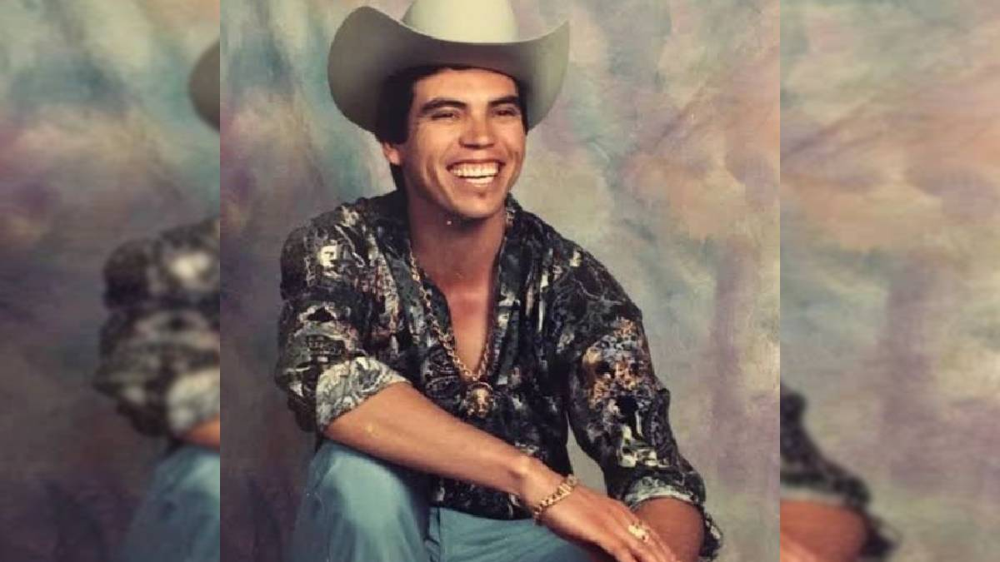
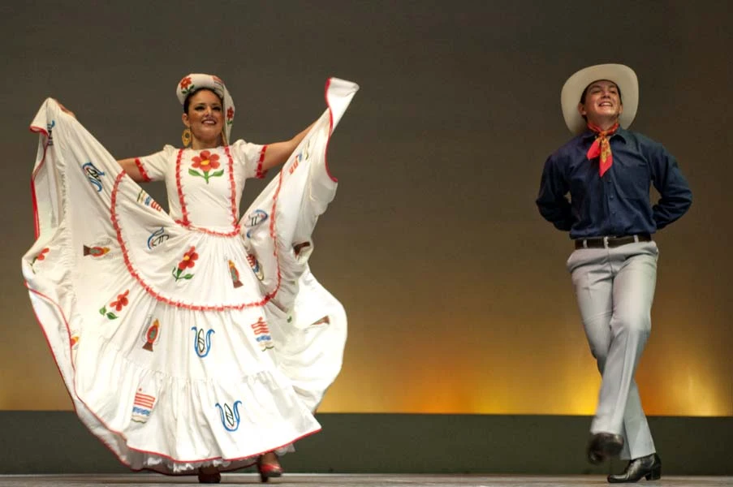

GENTE
Con una población de 2, 994, 153 habitantes, de los cuales el 49% es menor de 24 años, la gente de Sinaloa se caracteriza por su trato cálido y amable, su entrega al trabajo y su visión empresarial.
TRAJE TIPICO
Para las mujeres, generalmente incluye una blusa y una falda, que en la actualidad se conoce como "Flor de Amapa".
El traje masculino suele ser una camisa blanca, un pantalón, un paliacate rojo y un fajín.